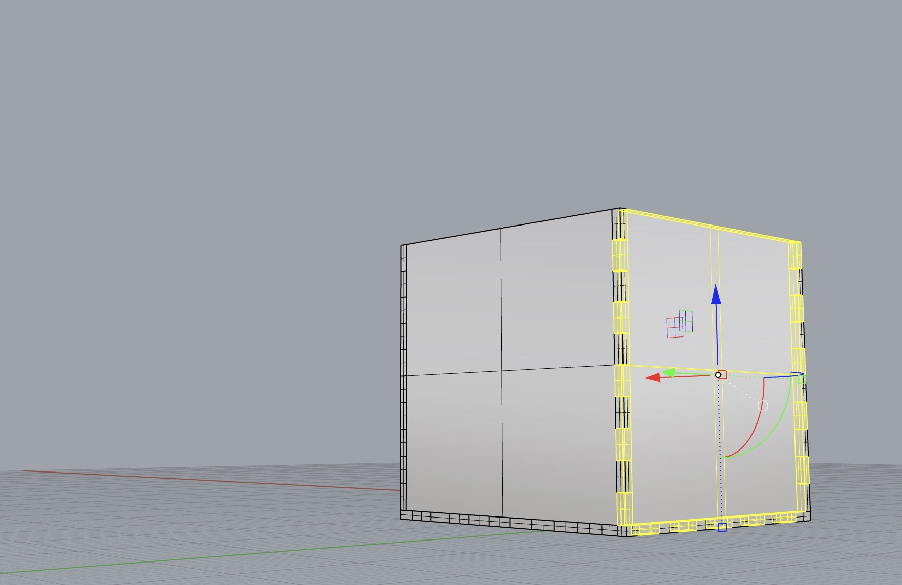

Creating a Box

I tried a few different methods when making the box to print. I knew I had been struggling with 3D printing and understanding how to create geometry in Rhino that would print well. I also know that more complex assignments are on the horizon and I wanted to learn more and gain better skills with these tools. I first tried to make a box by joining multiple solid box objects together in a 3D plane and using the UnionBoolean command to group the pieces that I wanted to print. That proved to be more complicated than I anticipated and my first print was not successful. I spoke with classmates Akshay Rawat and Rodrigo Tarribia to ask their advice and realized the method of drawing the shape in 2d and then extruding it, capping it, and exporting it as I had done for previous assignments would be best. Time to print: 50 minutes